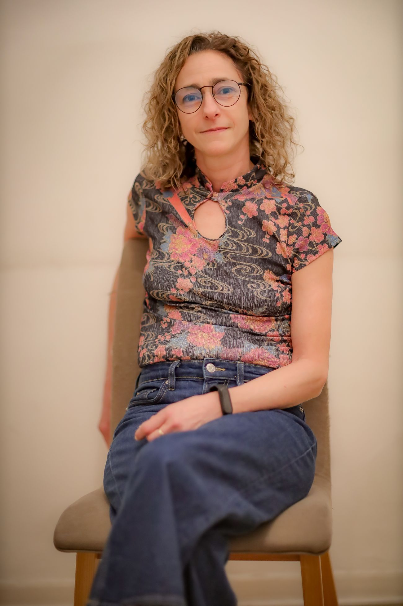
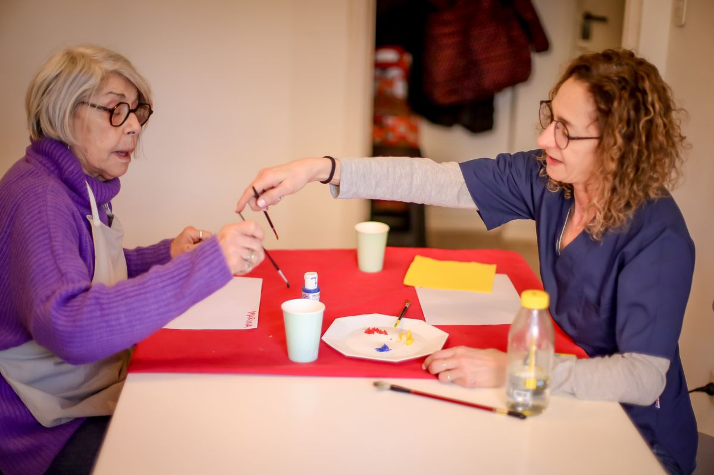
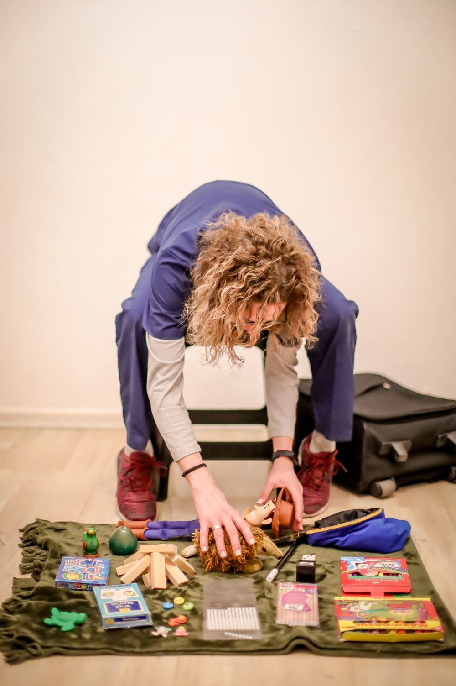
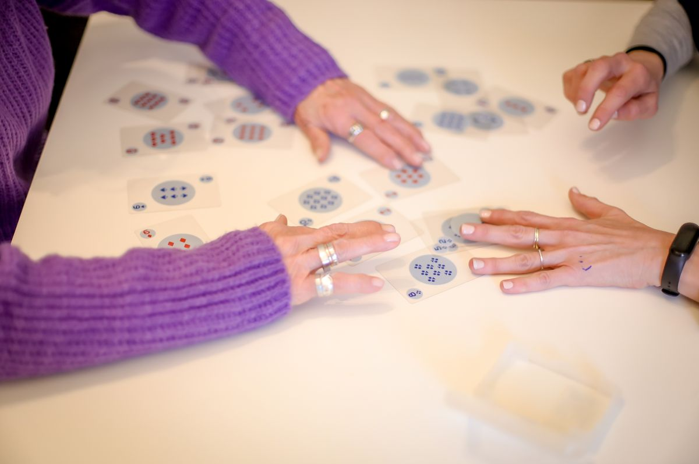
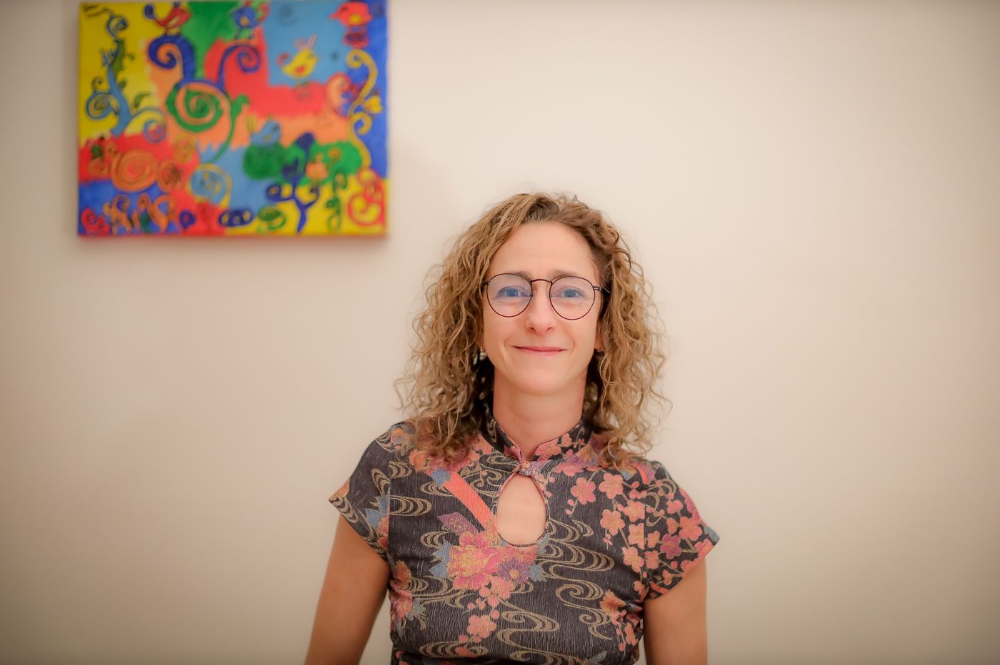

Psicoterapia a domicilio, en consultorio y online
Soy Yamila Beraja, Licenciada en Psicología (UBA). Acompaño a niños, adolescentes, jóvenes, adultos y adultos mayores, con y sin discapacidad.

Modalidades de atención
No todas las personas pueden o quieren trasladarse a un consultorio. Por eso elegimos juntos la modalidad que mejor se adapta a cada paciente y a su familia.
Me acerco al espacio habitual del paciente: su casa, una institución o el lugar donde el tratamiento tenga más sentido. Llevo los materiales que elijo para cada persona.
CABA y Zona NorteUn espacio tranquilo y preparado para el encuentro, el juego y el trabajo con distintos materiales.
Cuando la persona lo prefiere y la situación lo permite. También para orientación a familias y a estudiantes.
Propuestas
Cada tratamiento se construye de manera singular, según la historia, los intereses y las necesidades de cada persona.
Sesiones en el espacio habitual del paciente, pensadas especialmente cuando hay dificultades de movilidad, necesidades particulares o cuando el hogar es el lugar más adecuado para trabajar.
Un espacio de escucha y trabajo terapéutico para atravesar momentos difíciles, procesos emocionales y vinculares.
Un lugar seguro donde jugar, expresarse y sentirse escuchados, respetando los tiempos de cada niño y niña. Incluye entrevistas con la familia y, cuando hace falta, articulación con la escuela y otros profesionales.
Abordaje adaptado a las características, los modos de comunicación y los intereses de cada persona, con trabajo junto a la familia y al equipo de profesionales que la acompaña.
Actividades para trabajar atención, memoria, lenguaje y planificación dentro del proceso terapéutico, para sostener capacidades y favorecer la autonomía.
Encuentros con madres, padres y familias para pensar juntos situaciones de la crianza y acompañar a quienes cuidan.
Orientación sobre inclusión y abordaje de situaciones individuales, grupales e institucionales, con estudiantes, familias y equipos de trabajo.
Propuestas para disfrutar de la cultura y la ciudad con acompañamiento profesional.
Acompañamiento online para preparar parciales, finales y trabajos prácticos de carreras terciarias y universitarias.
Cómo trabajo
No existe una única forma de acompañar. El espacio, los recursos y la modalidad se construyen con cada persona.
Me escribís por WhatsApp, me contás la situación y coordinamos una primera entrevista.
Conozco a la persona, su historia, sus gustos, sus necesidades y lo que espera del tratamiento. Si corresponde, también a su familia.
Armo una propuesta que puede incluir juego, arte, materiales y actividades elegidas para esa persona en particular.
Entrevistas con la familia, intercambio con otros profesionales y con la escuela, y supervisión externa de mi trabajo, como parte del ejercicio ético de la profesión.




Sobre mí
Soy psicóloga y docente. Hace más de 30 años me dedico al trabajo educativo y psicoterapéutico con niños, adolescentes, jóvenes y adultos, con y sin discapacidad. También acompaño a adultos mayores y tengo experiencia con personas internadas por enfermedades graves y en cuidados paliativos.
Preguntas frecuentes
Principalmente en la Ciudad de Buenos Aires y Zona Norte. Si vivís en otra zona, escribime y lo vemos.
Sí, cuando la persona lo prefiere y la situación lo permite. La orientación a familias y a estudiantes también puede ser online.
Empezamos con entrevistas iniciales para conocer a la persona, su historia y lo que necesita. A partir de ahí definimos juntos la modalidad y la frecuencia.
Sí. Según cada caso, el tratamiento puede incluir entrevistas familiares, intercambio con otros profesionales de la salud y con la escuela.
Elijo los materiales según los intereses y posibilidades de cada paciente: juegos, arte, actividades de estimulación cognitiva y otros recursos. No se trata de hacer «algo lindo», sino de abrir otras formas de expresarse.
Consultas
Escribime por WhatsApp para consultar disponibilidad, modalidades y honorarios.
Este espacio es para consultas y turnos. Si estás atravesando una situación de riesgo, llamá al 107 o al 911, o acercate a la guardia del hospital más cercano.
Lic. Yamila Beraja · Psicóloga